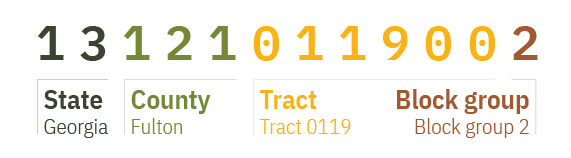
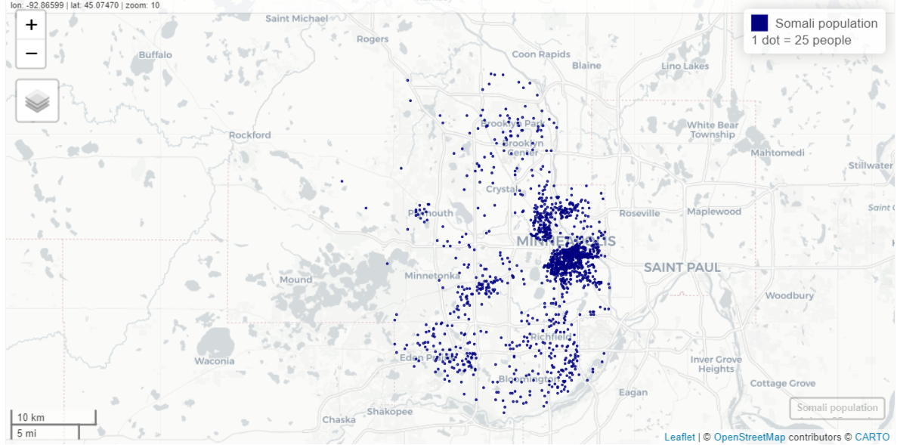
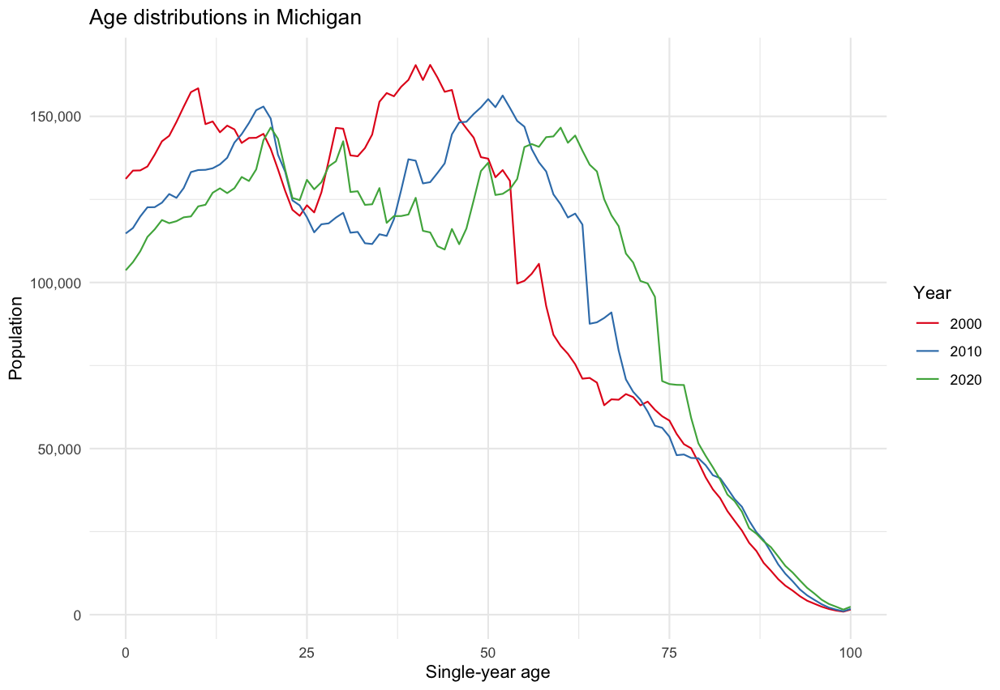
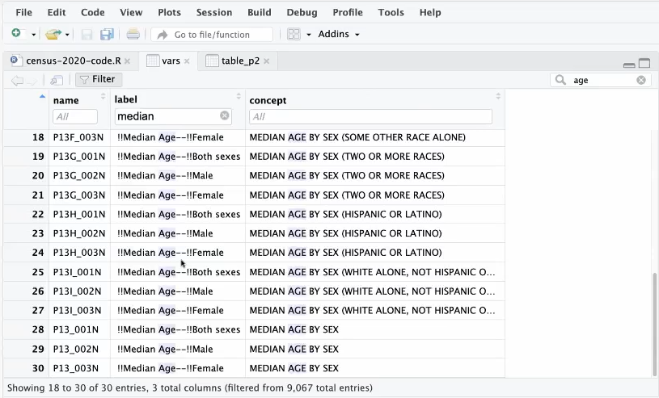
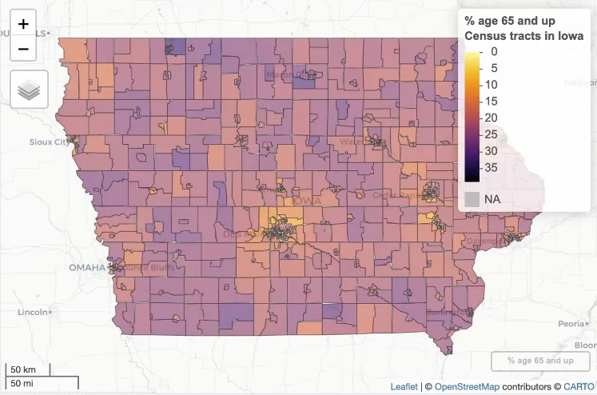

Census Data
Misc
- Notes from
- FIPS GEOID
 - popular variable calculations from variables in ACS
- Census Geocoder (link)
- Enter an address and codes for various geographies are returned
- Batch geocoding available for up to 10K records
- Codes for geographies returned in a .csv file
- TIGERweb (link)
- Allows you to get geography codes by searching for an area on a map
- Once zoomed-in on your desired area, you turn on geography layers to find the geography code for your area.
- US Census Regions
.png)
{kind=link}
Geographies

Misc
Types
- Legal/Administrative
- Census gets boundaries from outside party (state, county, city, etc.)
- e.g. election areas, school districts, counties, county subdivisions
- Statistical
- Census creates these boundaries
- e.g. regions, census tracts, ZCTAs, block groups, MSAs, urban areas
- Legal/Administrative
Nested Areas
.png)
- Census Tracts
- Areas within a county
- Around 1200 to 8000 people
- Small towns, rural areas, neighborhoods
- ** Census tracts may cross city boundaries **
- Block Groups
- Areas within a census tract
- Around 600 to 3000 people
- Census Blocks
- Areas within a block group
- Not for ACS, only for the 10-yr census
- Census Tracts
Places
- Misc
- One place cannot overlap another place
- Expand and contract as population or commercial activity increases or decreases
- Must represent an organized settlement of people living in close proximity.
- Incorporated Places
- cities, towns, villages
- Updated through Boundary and Annexation Survey (BAS) yearly
- Census Designated Places (CDPs)
- Areas that can’t become Incorporated Places because of state or city regulations
- Concentrations of population, housing, commericial structures
- Updated through Boundary and Annexation Survey (BAS) yearly
- Misc
County Subdivisions
- Minor Civil Divisions (MCDs)
- Legally defined by the state or county, stable entity. May have elected government
- e.g. townships, charter townships, or districts
- Census County Divisions (CCDs)
- no population requirment
- Subcounty units with stable boundaries and recognizable names
- Minor Civil Divisions (MCDs)
Zip Code Tabulation Areas (ZCTAs)
.png)
- Misc
- {crosswalkZCTA} - Contains the US Census Bureau’s 2020 ZCTA to County Relationship File, as well as convenience functions to translate between States, Counties and ZIP Code Tabulation Areas (ZCTAs)
- Approximate USPS Code distribution for housing units
- The most frequently occurring zip code within an census block is assigned to a census block
- Then blocks are aggregated into areas (ZCTAs)
- ZCTAs do NOT nest within any other geographies
- I guess the aggregated ZCTA blocks can overlap block groups
- 2010 ZCTAs exclude large bodies of water and unpopulated areas
- Misc
American Community Survey (ACS)
- About
- Yearly estimates based on samples of the population over a 5yr period
- Therefore a Margin of Error (MoE) is included with the estimates.
- Detailed social, economic, housing, and demographic characteristics
- census.gov/acs
- Yearly estimates based on samples of the population over a 5yr period
- ACS Release Schedule (releases)
- September - 1-Year Estimates (from previous year’s collection)
- Estimates for areas with populations of >65K
- October - 1-Year Supplemental Estimates
- Estimates for areas with populations between 20K-64999
- December - 5-Year Estimates
- Estimates for areas including census tract and block groups
- September - 1-Year Estimates (from previous year’s collection)
- Data Collected
- Population
- Social
- Ancestry, Citizenship, Citizen Voting Age Population, Disability, Education Attainment, Fertility, Grandparents, Language, Marital Status, Migration, School Enrollment, Veterans
- Demographic
- Age, Hispanic Origin, Race, Relationship, Sex
- Economic
- Class of worker, Commuting, Employment Status, Food Stamps (SNAP), Health Insurance, Hours/Week, Weeks/Year, Income, Industry & Occupation
- Social
- Housing
- Computer & Internet Use, Costs (Mortgage, Taxes, Insurance), Heating Fuel, Home Value, Occupancy, Plumbing/Kitchen Facilities, Structure, Tenure (Own/Rent), Utilities, Vehicles, Year Built/Year Movied In
- Population
Dicennial US Census
Misc
- A complete count — not based on samples like the ACS
- Applies differential privacy to preserve respondent confidentiality
- Adds noise to data. Greater effect at lower levels (i.e. block level)
- The exception is that is no differetial privacy for household-level data.
PL94-171
Population data which the government needs for redistricting
sumfile = “pl”
State Populations
pop20 <- get_decennial( geography = "state", variables = "P1_001N", year = 2020 )- For 2020, default is sumfile = “pl”
DHC
Age, Sex, Race, Ethnicity, and Housing Tenure (most popular dataset)
sumfile = “dhc”
County
tx_population <- get_decennial( geography = "county", variables = "P1_001N", state = "TX", sumfile = "dhc", year = 2020 )Census Block (analogous to a city block)
matagorda_blocks <- get_decennial( geography = "block", variables = "P1_001N", state = "TX", county = "Matagorda", sumfile = "dhc", year = 2020 )
Demographic Profile
Pretabulated percentages from dhc
sumfile = “dp”
- Tabulations for 118th Congress and Island Areas (i.e. Congressional Districts)
- sumfile = “cd118”
- Tabulations for 118th Congress and Island Areas (i.e. Congressional Districts)
C suffix variables are counts while P suffix variables are percentages
- 0.4 is 0.4% not 40%
Example: Same-sex married and partnered in California by County
ca_samesex <- get_decennial( geography = "county", state = "CA", variables = c(married = "DP1_0116P", partnered = "DP1_0118P"), year = 2020, sumfile = "dp", output = "wide" )
Detailed DHC-A
Detailed demographic data; Thousands of racial and ethnic groups; Tabulation by sex and age.
Different groups are in different tables, so specific groups can be hard to locate.
Adaptive design means the demographic group (i.e. variable) will only be available in certain areas. For privacy, data gets supressed when the area has low population.
- There’s typically considerable sparsity especially when going down census tract
Args
- sumfile = “ddhca”
- pop_group - Population group code (See
get_pop_groupsbelow)- “all” for all groups
- pop_group_label = TRUE - Adds group labels
get_pop_groups(2020, "ddhca")- Gets group codes for ethnic groups- For various groups there could be at least two variables (e..g Somaili, Somali and any combination)
- For time series analysis, analagous groups to 2020’s for 2000 is SF2/SF4 and for 2010 is SF2. (SF stands for Summary File)
check_ddhca_groups- Checks which variables are available for a specific groupExample: Somali
check_ddhca_groups( geography = "county", pop_group = "1325", state = "MN", county = "Hennepin" )
Example: Minnesota group populations
load_variables(2020, "ddhca") %>% View() mn_population_groups <- get_decennial( geography = "state", variables = "T01001_001N", # total population state = "MN", year = 2020, sumfile = "ddhca", pop_group = "all", # for all groups pop_group_label = TRUE )- Includes aggregate categories like European Alone, Other White Alone, etc., so you can’t just aggregate the value column to get the total population in Minnesota.
- So, in order to calculate ethnic group ratios of the total state or county, etc. population, you need to get those state/county totals from other tables (e.g. PL94-171)
- Includes aggregate categories like European Alone, Other White Alone, etc., so you can’t just aggregate the value column to get the total population in Minnesota.
Use dot density and not chloropleths to visualize these sparse datasets
Example: Somali populations by census tract in Minneapolis
hennepin_somali <- get_decennial( geography = "tract", variables = "T01001_001N", # total population state = "MN", county = "Hennepin", year = 2020, sumfile = "ddhca", pop_group = "1325", # somali pop_group_label = TRUE, geometry = TRUE ) somali_dots <- as_dot_density( hennepin_somali, value = "value", # column name which is by default, "value" values_per_dot = 25 ) mapview(somali_dots, cex = 0.01, layer.name = "Somali population<br>1 dot = 25 people", col.regions = "navy", color = "navy")- values_per_dot = 25 says make each dot worth 25 units (e.g. people or housing units)
{kind=link}
Time Series Analysis
{tidycensus} only has 2010 and 2020 censuses
- See https://nhgis.org for older census data
Issue: county names and boundaries change over time (e.g. Alaska redraws a lot)
- Census gives a different GeoID to counties that get renamed even though they’re the same county.
- NA values showing up after you calculate how the value changes over time is a good indication of this problem. Check for NAs:
filter(county_change, is.na(value10))
Example: Join 2010 and 2020 and Calculate Percent Change
county_pop_10 <- get_decennial( geography = "county", variables = "P001001", year = 2010, sumfile = "sf1" ) county_pop_10_clean <- county_pop_10 %>% select(GEOID, value10 = value) county_pop_20 <- get_decennial( geography = "county", variables = "P1_001N", year = 2020, sumfile = "dhc" ) %>% select(GEOID, NAME, value20 = value) county_joined <- county_pop_20 %>% left_join(county_pop_10_clean, by = "GEOID") county_joined county_change <- county_joined %>% mutate( total_change = value20 - value10, percent_change = 100 * (total_change / value10) )Example: Age distribution over time in Michigan
- Code available in the github repo or R/Workshops/tidycensus-umich-workshop-2024-main/census-2020/bonus-chart.R
- Distribution shape remains pretty much the same, but decreasing for most age cohorts, i.e. people are leaving the state across most age groups.
- e.g. The large hump representing the group of people in there mid-40s in 2000 steadily decreases over time.
{kind=link}
tidycensus
- Get an API key
- Request a key, then activate the key from the link in your email.(https://api.census.gov/data/key_signup.html)
- Set as an environment variable:
census_api_key("<api key>", install = TRUE)- Or add this line to .Renviron file, CENSUS_API_KEY=‘<api key’
- Search Variables
Columns
- Name - ID of the variable (Use this in the survey functions)
- Label - Detailed description of the variable
- Context - Subject of the table that the variable is located in.
Prefixes (Variables can have combinations of prefixes)
- P: i.e. Person; Data available at the census block and larger
- CT: Data available at the census track and larger
- H: Data available at the Housing Unit level
I think housing unit is an alternatve unit. So instead of the unit being a person, which I assume is the typical unit, it’s a housing unit (~family).
Not affected by Differential Privacy (i.e. no noise added; true value)
Example: Total Deleware housing units at census block level
dp_households <- get_decennial( geography = "block", variables = "H1_001N", state = "DE", sumfile = "dhc", year = 2020 )
Example: DHC data in census for 2020
vars <- load_variables(2020, "dhc") View(vars)- View table, click filter, and then search for parameters (e.g. Age, Median, etc.) with the Label, Context boxes, and overall search box
- summary_var - Argument for supplying an additional variable that you need to calculate some kind of summary statistic
Example: Race Percentage per Congressional District
race_vars <- c( Hispanic = "P5_010N", # all races identified as hispanic White = "P5_003N", # white not hispanic Black = "P5_004N", # black not hispanic Native = "P5_005N", # native american not hispanic Asian = "P5_006N", # asian not hispanic HIPI = "P5_007N" # hawaiian, islander not hispanic ) cd_race <- get_decennial( geography = "congressional district", variables = race_vars, summary_var = "P5_001N", # total population for county year = 2020, sumfile = "cd118" ) cd_race_percent <- cd_race %>% mutate(percent = 100 * (value / summary_value)) %>% select(NAME, variable, percent)
- geometry = TRUE- Joins shapefile with data and returns a SF (Simple Features) dataframe for mapping
Misc
- You can create a discrete color palette with the at argument in the
mapviewfunction.Example
# check min and max of your data to select range of bins min(iowa_over_65, na.rm = TRUE) # 0 max(iowa_over_65, na.rm = TRUE) # 38.4 m1 <- mapview(iowa_over_65, zcol = "value", layer.name = "% age 65 and up<br>Census tracts in Iowa", col.regions = inferno(100, direction = -1), at = c(0, 10, 20, 30, 40))- This will result in a discrete palette with bins of 0-10, 10-20, etc. Looks like an overlap, so I’m sure which bin contains the endpoints.
- You can create a discrete color palette with the at argument in the
Example: Over 65 in Iowa by census tract
library(mapviw); library(viridisLite) iowa_over_65 <- get_decennial( geography = "tract", variables = "DP1_0024P", state = "IA", geometry = TRUE, sumfile = "dp", year = 2020 ) m1 <- mapview(iowa_over_65, zcol = "value", layer.name = "% age 65 and up<br>Census tracts in Iowa", col.regions = inferno(100, direction = -1))Export as an HTML file
htmlwidgets::saveWidget(m1@map, "iowa_over_65.html")- Can embed it elsewhere (html report or website) by adding it as an asset
{kind=link}
{kind=link}